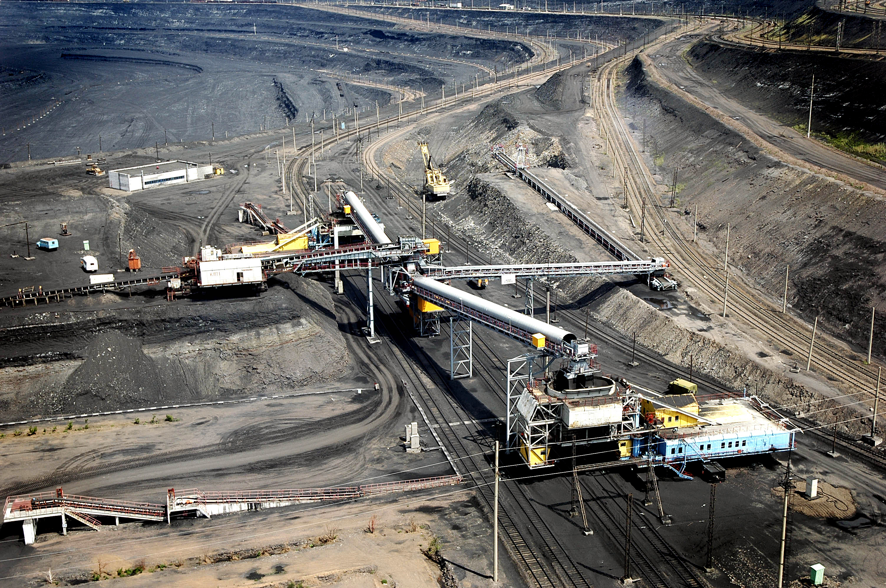

Ekibastuz is a small town, which is located in South part of Kazakhstan. This city is one of the main cities in Pavlodar region. See the picture below, to understand where city is located:

Today Ekibastuz is the biggest open-cast coal field and one of the most perspective open-cast coal regions in the world. It contains more than 13 billion tons of coal in the area of 62 square kilometers. In other words, there are 74 million tons of coal per km³.
There are several hypotheses about the origin of the name of the city "Eki bas tuz" (which literally means "Two heads of salt"). According to legend, Kosym Pshenbaev, who discovered coal deposits in the 19th century, marked the place of discovery with two heads of salt, since he had nothing else with him. Thus, he unwittingly gave the name of the area. In reality, already on a two-verst topographic map compiled by the Omsk military topographic department in 1876, Lake Ekibastuz was plotted with a coal deposit marked near it. The name Ekibastuz existed before the discovery of coal here.